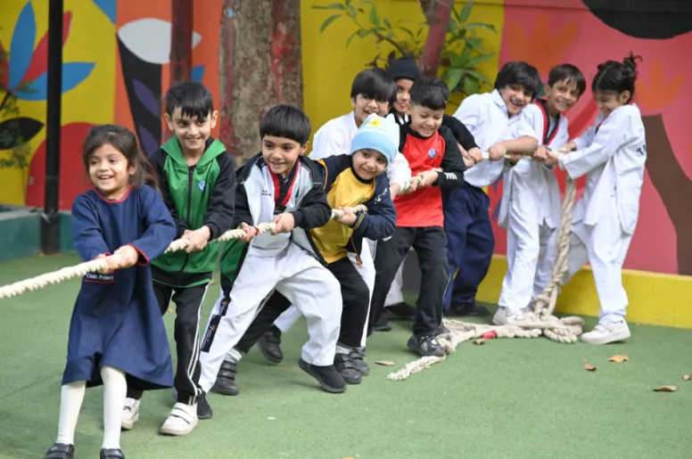

Taught well. Taught again.
Cambridge Assessment International Education from the early years to A2 — with a method built so that no Credo student needs private tuition.
Little steps, big smiles.
Inquiry-based and play-based learning, with learner profiles that track each child — and a strong emphasis on etiquette, collaboration and communication.
The teaching principles

O Level: Science or Commerce.
Both streams run through classes 9, 10 and 11. As A Level and future careers require, a Science candidate chooses either Biology or Computer Science.
Craft your own combination.
Flexible subject combinations across commerce, engineering, medical sciences and the humanities — built for top universities in Pakistan and abroad.
The Credo method. No tuition.
A child simply does not need private tuition when the school provides a durable method of education. These six commitments are that method.
Integrated learning combines academic rigour with real-world relevance — interdisciplinary approaches that connect ideas across subjects for an interconnected world.
Nobody gets left behind.
A Levels are a leap from O Levels. Credo bridges it with structured support — and a counselling department for academics and well-being.
Counselling covers
At the College, academic counsellors work with parents and students through A Levels, and career counsellors guide university choice, aptitude tests, majors and personal statements.